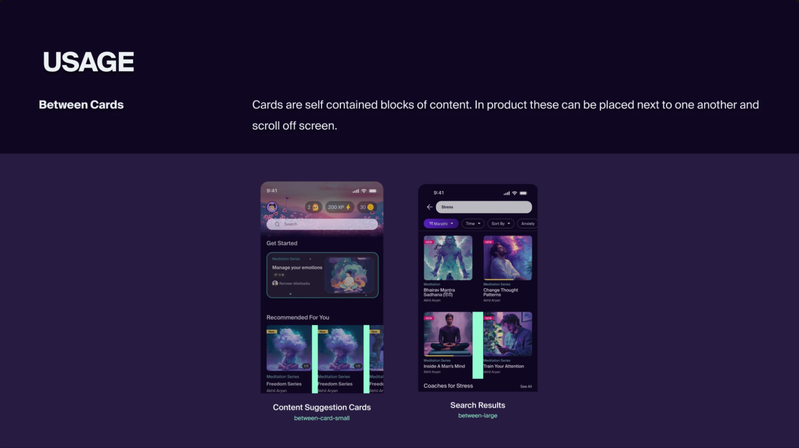
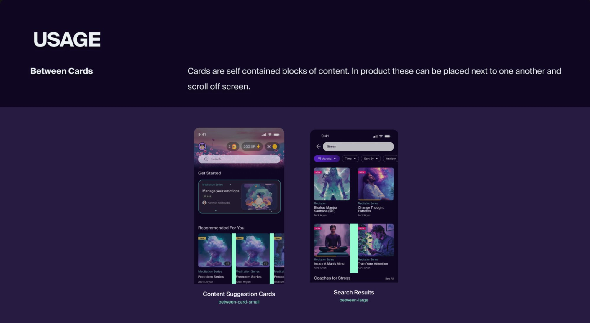
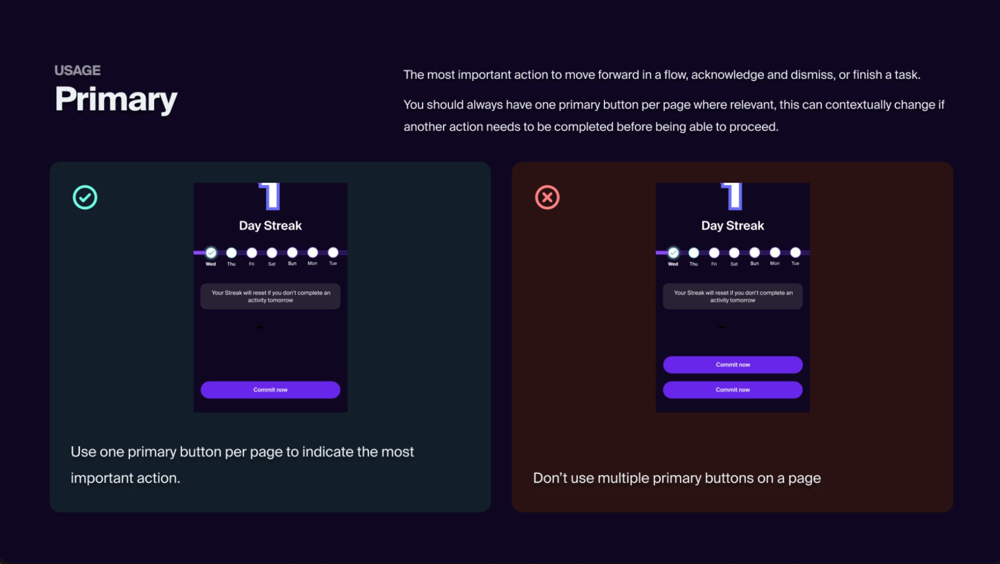
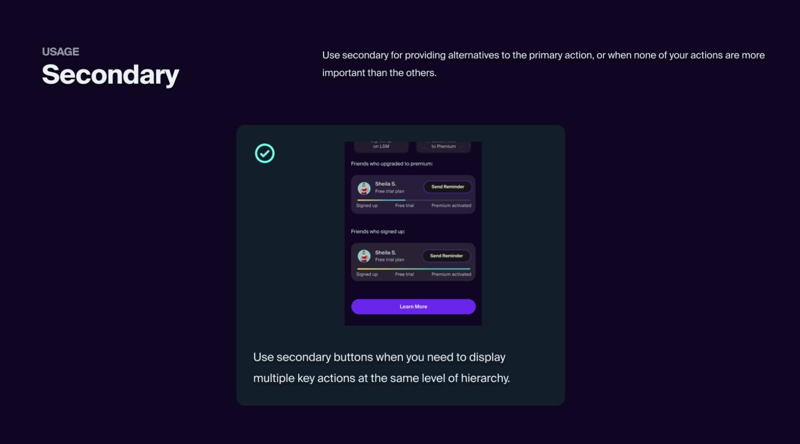

The app had existing design debt — built up over time without a proper process in place.
When I joined, the inconsistencies were already baked into the product. Not catastrophically — more like a slow leak. The kind of thing that's easy to ignore sprint by sprint, until you zoom out and realize the entire experience feels slightly off.
On their own, small issues. Together, they were quietly eroding the product's credibility. And with 3 designers and ~6 developers shipping continuously, every sprint was making the debt worse — not better.
This looked like a UI problem. It was actually a process problem in disguise.
The visible symptoms — mismatched spacing, inconsistent buttons — were just the surface. The real issue ran deeper, in two places:
We weren't just building features anymore. We were constantly correcting the past.
Every new feature inherited the inconsistency of the last. There was no feedback loop to catch it, and no shared language to prevent it.
Instead of asking "how do we make the UI consistent?" — we asked something sharper.
How might we ensure that what gets designed is exactly what gets shipped?
That single reframe changed everything. It moved the problem from aesthetics to infrastructure. And it led to a two-part answer: build a system that removes ambiguity, and build a process that catches what slips through anyway.
We didn't just list values. We justified every decision and showed it in context.
Before writing a single token, we studied how other teams had solved this. The Wise design system — built for a global finance product — came closest to what we had in mind. What stood out wasn't the tokens themselves, but the philosophy behind them: every spacing value, every component, every rule was grounded in a reason, paired with a real usage example.
We structured ours the same way. Each token wasn't just a name and a value — it came with context. Why does between-cards map to size-40? What does it look like in the actual product? Where does it break? That layer of justification is what made the system adoptable, not just referenceable.
We started with tokens — not components. Foundation first, then intent.
Most design systems start with components: buttons, cards, forms. We started one layer below — with the values those components are built from. Foundation tokens defined the raw scale. Semantic tokens gave those values meaning.
The shift was immediate. "Is this 16 or 20?" became "use component-default." Decisions that used to require a conversation were now just a token name. Layouts became predictable across screens and platforms without anyone having to police them.
Each token was also paired with a real usage example from the product — showing exactly where and how it applied. A developer reading the spec didn't just see a number, they saw it on an actual screen from the app.


For components, we kept the same principle — clarity over completeness. Buttons got a strict four-tier hierarchy: Primary (one key action), Secondary (alternatives), Tertiary (supporting), Minimal (dismissive). But we didn't stop at defining them — we documented the do's and don'ts with real product screens.


This made the system feel like a product decision, not a style guide. The person reading it had the full context — the value, the reason, and the real screen.
The system removed ambiguity. But design loss during implementation needed something else.
A great design system still gets lost in translation if the handoff is broken. Developers implement what they understand — and the gap between a Figma file and a running app is where most of the inconsistency was happening.
So we added one new step: a UI Testing Round. Before any feature was considered shipped, designers and developers sat together and went through it screen by screen.
Handoff stopped being a one-time event and became a closed feedback loop.
The biggest outcome wasn't just fewer bugs — it was shared ownership. Developers started caring about the UI because they were part of the decision. That culture shift was harder to build than any component library.